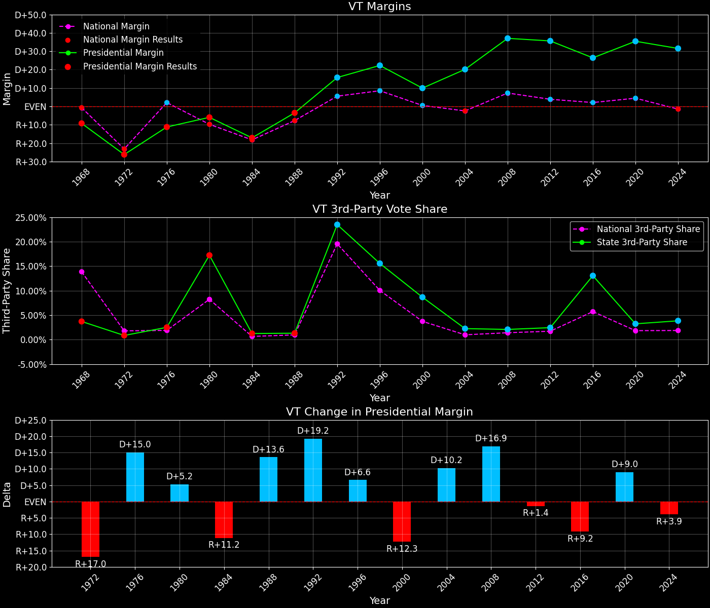
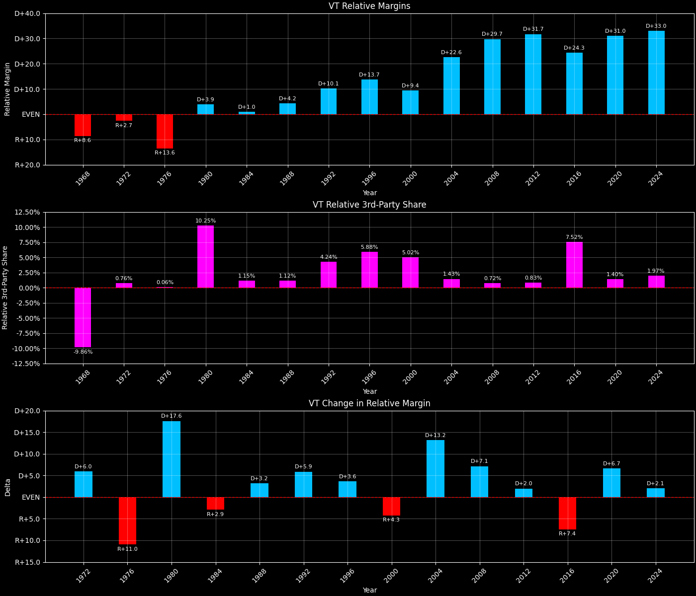

Vermont (VT) — Statewide

Margins · 3rd-Party share · Pres. deltas

Relative margins · Relative 3rd-Party · Rel. deltas
Vermont (VT) — Total Data
| Year | D | R | State Margin | Nat. Margin | Rel. Margin | Total votes | EVs |
|---|---|---|---|---|---|---|---|
| 1916 | 22,708(35.2%) | 40,250(62.4%) | R+27.2 | D+3.1 | R+30.3 | 64,475 | 4 |
| 1920 | 20,919(23.3%)(Δ -1,789) | 68,212(75.8%)(Δ 27,962) | R+52.6(Δ R+25.4) | R+26.2(Δ R+29.3) | R+26.4(Δ D+3.9) | 89,961(Δ 25,486) | 4 |
| 1924 | 16,124(15.7%)(Δ -4,795) | 80,498(78.2%)(Δ 12,286) | R+62.5(Δ R+10.0) | R+25.2(Δ D+1.0) | R+37.3(Δ R+10.9) | 102,917(Δ 12,956) | 4 |
| 1928 | 44,440(32.9%)(Δ 28,316) | 90,404(66.9%)(Δ 9,906) | R+34.0(Δ D+28.6) | R+17.4(Δ D+7.8) | R+16.6(Δ D+20.8) | 135,191(Δ 32,274) | 4 |
| 1932 | 56,266(41.1%)(Δ 11,826) | 78,984(57.7%)(Δ -11,420) | R+16.6(Δ D+17.4) | D+17.8(Δ D+35.2) | R+34.3(Δ R+17.8) | 136,980(Δ 1,789) | 3 |
| 1936 | 62,124(43.2%)(Δ 5,858) | 81,023(56.4%)(Δ 2,039) | R+13.2(Δ D+3.4) | D+24.3(Δ D+6.5) | R+37.4(Δ R+3.1) | 143,689(Δ 6,709) | 3 |
| 1940 | 64,269(44.9%)(Δ 2,145) | 78,371(54.8%)(Δ -2,652) | R+9.9(Δ D+3.3) | D+10.0(Δ R+14.3) | R+19.8(Δ D+17.6) | 143,062(Δ -627) | 3 |
| 1944 | 53,820(42.9%)(Δ -10,449) | 71,527(57.1%)(Δ -6,844) | R+14.1(Δ R+4.3) | D+7.5(Δ R+2.5) | R+21.6(Δ R+1.8) | 125,361(Δ -17,701) | 3 |
| 1948 | 45,557(36.9%)(Δ -8,263) | 75,926(61.5%)(Δ 4,399) | R+24.6(Δ R+10.5) | D+4.5(Δ R+3.0) | R+29.1(Δ R+7.5) | 123,382(Δ -1,979) | 3 |
| 1952 | 43,355(28.2%)(Δ -2,202) | 109,717(71.5%)(Δ 33,791) | R+43.2(Δ R+18.6) | R+10.9(Δ R+15.3) | R+32.4(Δ R+3.3) | 153,557(Δ 30,175) | 3 |
| 1956 | 42,549(27.8%)(Δ -806) | 110,390(72.2%)(Δ 673) | R+44.3(Δ R+1.1) | R+15.4(Δ R+4.5) | R+28.9(Δ D+3.4) | 152,978(Δ -579) | 3 |
| 1960 | 69,186(41.3%)(Δ 26,637) | 98,131(58.6%)(Δ -12,259) | R+17.3(Δ D+27.0) | D+0.2(Δ D+15.6) | R+17.5(Δ D+11.5) | 167,324(Δ 14,346) | 3 |
| 1964 | 108,127(66.3%)(Δ 38,941) | 54,942(33.7%)(Δ -43,189) | D+32.6(Δ D+49.9) | D+22.6(Δ D+22.4) | D+10.0(Δ D+27.5) | 163,089(Δ -4,235) | 3 |
| 1968 | 70,255(43.5%)(Δ -37,872) | 85,142(52.8%)(Δ 30,200) | R+9.2(Δ R+41.8) | R+0.7(Δ R+23.3) | R+8.5(Δ R+18.6) | 161,404(Δ -1,685) | 3 |
| 1972 | 68,174(36.5%)(Δ -2,081) | 117,149(62.7%)(Δ 32,007) | R+26.2(Δ R+17.0) | R+23.1(Δ R+22.4) | R+3.1(Δ D+5.5) | 186,947(Δ 25,543) | 3 |
| 1976 | 81,044(43.1%)(Δ 12,870) | 102,085(54.3%)(Δ -15,064) | R+11.2(Δ D+15.0) | D+2.1(Δ D+25.2) | R+13.3(Δ R+10.2) | 187,855(Δ 908) | 3 |
| 1980 | 81,891(38.4%)(Δ 847) | 94,598(44.4%)(Δ -7,487) | R+6.0(Δ D+5.2) | R+9.7(Δ R+11.8) | D+3.8(Δ D+17.0) | 213,207(Δ 25,352) | 3 |
| 1984 | 95,730(40.8%)(Δ 13,839) | 135,865(57.9%)(Δ 41,267) | R+17.1(Δ R+11.2) | R+18.2(Δ R+8.5) | D+1.1(Δ R+2.7) | 234,561(Δ 21,354) | 3 |
| 1988 | 115,775(47.6%)(Δ 20,045) | 124,331(51.1%)(Δ -11,534) | R+3.5(Δ D+13.6) | R+7.7(Δ D+10.5) | D+4.2(Δ D+3.1) | 243,333(Δ 8,772) | 3 |
| 1992 | 133,592(46.1%)(Δ 17,817) | 88,122(30.4%)(Δ -36,209) | D+15.7(Δ D+19.2) | D+5.6(Δ D+13.3) | D+10.1(Δ D+5.9) | 289,701(Δ 46,368) | 3 |
| 1996 | 137,894(53.4%)(Δ 4,302) | 80,352(31.1%)(Δ -7,770) | D+22.3(Δ D+6.6) | D+8.5(Δ D+3.0) | D+13.7(Δ D+3.6) | 258,449(Δ -31,252) | 3 |
| 2000 | 149,022(50.6%)(Δ 11,128) | 119,775(40.7%)(Δ 39,423) | D+9.9(Δ R+12.3) | D+0.5(Δ R+8.0) | D+9.4(Δ R+4.3) | 294,308(Δ 35,859) | 3 |
| 2004 | 184,067(58.9%)(Δ 35,045) | 121,180(38.8%)(Δ 1,405) | D+20.1(Δ D+10.2) | R+2.5(Δ R+3.0) | D+22.6(Δ D+13.2) | 312,309(Δ 18,001) | 3 |
| 2008 | 219,262(67.5%)(Δ 35,195) | 98,974(30.4%)(Δ -22,206) | D+37.0(Δ D+16.9) | D+7.3(Δ D+9.7) | D+29.7(Δ D+7.1) | 325,046(Δ 12,737) | 3 |
| 2012 | 199,239(66.6%)(Δ -20,023) | 92,698(31.0%)(Δ -6,276) | D+35.6(Δ R+1.4) | D+3.9(Δ R+3.4) | D+31.7(Δ D+2.0) | 299,290(Δ -25,756) | 3 |
| 2016 | 178,573(56.7%)(Δ -20,666) | 95,369(30.3%)(Δ 2,671) | D+26.4(Δ R+9.2) | D+2.1(Δ R+1.8) | D+24.3(Δ R+7.4) | 315,067(Δ 15,777) | 3 |
| 2020 | 242,820(66.1%)(Δ 64,247) | 112,704(30.7%)(Δ 17,335) | D+35.4(Δ D+9.0) | D+4.5(Δ D+2.4) | D+31.0(Δ D+6.6) | 367,428(Δ 52,361) | 3 |
| 2024 | 235,791(63.8%)(Δ -7,029) | 119,395(32.3%)(Δ 6,691) | D+31.5(Δ R+3.9) | R+1.5(Δ R+5.9) | D+33.0(Δ D+2.0) | 369,422(Δ 1,994) | 3 |
Column explanations
- Δ
- Change (delta) in the value from the previous election year.
- Year
- Election year.
- D
- Number of votes for the Democratic candidate (raw count(pct%)).
- R
- Number of votes for the Republican candidate (raw count(pct%)).
- State Margin
- Margin between the two major-party candidates, including third-party votes ((D - R)/total).
- Nat. Margin
- The national presidential margin for that year, including third-party votes ((D_total - R_total)/total_votes).
- Rel. Margin
- The presidential margin relative to the national presidential margin (Margin - Nat. Margin).
- Total votes
- Total voter turnout or ballots cast (when provided).
- EVs
- Number of electoral votes allocated to this state or unit.
Vermont (VT) — Third-Party Data
| Year | D | R | Other votes | State 3rd-Party Share | 3rd-Party Nat. Share | 3rd-Party Rel. Share |
|---|---|---|---|---|---|---|
| 1916 | 22,708(35.2%) | 40,250(62.4%) | 1,517(2.4%) | 2.35% | 4.64% | -2.29% |
| 1920 | 20,919(23.3%)(Δ -1,789) | 68,212(75.8%)(Δ 27,962) | 830(0.9%) | 0.92% | 5.53% | -4.61% |
| 1924 | 16,124(15.7%)(Δ -4,795) | 80,498(78.2%)(Δ 12,286) | 6,295(6.1%) | 6.12% | 17.14% | -11.02% |
| 1928 | 44,440(32.9%)(Δ 28,316) | 90,404(66.9%)(Δ 9,906) | 347(0.3%) | 0.26% | 0.99% | -0.73% |
| 1932 | 56,266(41.1%)(Δ 11,826) | 78,984(57.7%)(Δ -11,420) | 1,730(1.3%) | 1.26% | 2.94% | -1.68% |
| 1936 | 62,124(43.2%)(Δ 5,858) | 81,023(56.4%)(Δ 2,039) | 542(0.4%) | 0.38% | 2.66% | -2.28% |
| 1940 | 64,269(44.9%)(Δ 2,145) | 78,371(54.8%)(Δ -2,652) | 422(0.3%) | 0.29% | 0.48% | -0.19% |
| 1944 | 53,820(42.9%)(Δ -10,449) | 71,527(57.1%)(Δ -6,844) | 14(0.0%) | 0.01% | 0.72% | -0.71% |
| 1948 | 45,557(36.9%)(Δ -8,263) | 75,926(61.5%)(Δ 4,399) | 1,899(1.5%) | 1.54% | 5.38% | -3.84% |
| 1952 | 43,355(28.2%)(Δ -2,202) | 109,717(71.5%)(Δ 33,791) | 485(0.3%) | 0.32% | 0.49% | -0.17% |
| 1956 | 42,549(27.8%)(Δ -806) | 110,390(72.2%)(Δ 673) | 39(0.0%) | 0.03% | 0.67% | -0.64% |
| 1960 | 69,186(41.3%)(Δ 26,637) | 98,131(58.6%)(Δ -12,259) | 7(0.0%) | 0.00% | 0.73% | -0.73% |
| 1964 | 108,127(66.3%)(Δ 38,941) | 54,942(33.7%)(Δ -43,189) | 20(0.0%) | 0.01% | 0.48% | -0.46% |
| 1968 | 70,255(43.5%)(Δ -37,872) | 85,142(52.8%)(Δ 30,200) | 6,007(3.7%) | 3.72% | 13.86% | -10.14% |
| 1972 | 68,174(36.5%)(Δ -2,081) | 117,149(62.7%)(Δ 32,007) | 1,624(0.9%) | 0.87% | 1.80% | -0.93% |
| 1976 | 81,044(43.1%)(Δ 12,870) | 102,085(54.3%)(Δ -15,064) | 4,726(2.5%) | 2.52% | 1.90% | 0.61% |
| 1980 | 81,891(38.4%)(Δ 847) | 94,598(44.4%)(Δ -7,487) | 36,718(17.2%) | 17.22% | 8.24% | 8.98% |
| 1984 | 95,730(40.8%)(Δ 13,839) | 135,865(57.9%)(Δ 41,267) | 2,966(1.3%) | 1.26% | 0.67% | 0.59% |
| 1988 | 115,775(47.6%)(Δ 20,045) | 124,331(51.1%)(Δ -11,534) | 3,227(1.3%) | 1.33% | 0.98% | 0.35% |
| 1992 | 133,592(46.1%)(Δ 17,817) | 88,122(30.4%)(Δ -36,209) | 67,987(23.5%) | 23.47% | 19.55% | 3.92% |
| 1996 | 137,894(53.4%)(Δ 4,302) | 80,352(31.1%)(Δ -7,770) | 40,203(15.6%) | 15.56% | 10.05% | 5.51% |
| 2000 | 149,022(50.6%)(Δ 11,128) | 119,775(40.7%)(Δ 39,423) | 25,511(8.7%) | 8.67% | 3.75% | 4.92% |
| 2004 | 184,067(58.9%)(Δ 35,045) | 121,180(38.8%)(Δ 1,405) | 7,062(2.3%) | 2.26% | 1.00% | 1.26% |
| 2008 | 219,262(67.5%)(Δ 35,195) | 98,974(30.4%)(Δ -22,206) | 6,810(2.1%) | 2.10% | 1.42% | 0.67% |
| 2012 | 199,239(66.6%)(Δ -20,023) | 92,698(31.0%)(Δ -6,276) | 7,353(2.5%) | 2.46% | 1.73% | 0.72% |
| 2016 | 178,573(56.7%)(Δ -20,666) | 95,369(30.3%)(Δ 2,671) | 41,125(13.1%) | 13.05% | 5.73% | 7.32% |
| 2020 | 242,820(66.1%)(Δ 64,247) | 112,704(30.7%)(Δ 17,335) | 11,904(3.2%) | 3.24% | 1.84% | 1.40% |
| 2024 | 235,791(63.8%)(Δ -7,029) | 119,395(32.3%)(Δ 6,691) | 14,236(3.9%) | 3.85% | 1.88% | 1.97% |
Column explanations
- Year
- Election year.
- D
- Number of votes for the Democratic candidate (raw count(pct%)).
- R
- Number of votes for the Republican candidate (raw count(pct%)).
- Other votes
- Number of votes for third-party (other) candidates (raw count(pct%)).
- State 3rd-Party Share
- Share of the vote received by third-party (other) candidates.
- 3rd-Party Nat. Share
- The national third-party share for that year (3rd-Party votes / total votes).
- 3rd-Party Rel. Share
- Third-party share relative to the national third-party share (3rd-Party share - Nat. 3rd-Party share).

Two-party margins · relative · deltas
Vermont (VT) — Two-Party Data
| Year | D | R | 2-Party Margin | 2-Party Nat. Margin | 2-Party Rel. Margin | EVs |
|---|---|---|---|---|---|---|
| 1916 | 22,708(36.1%) | 40,250(63.9%) | R+27.9 | D+3.3 | R+31.1 | 4 |
| 1920 | 20,919(23.5%)(Δ -1,789) | 68,212(76.5%)(Δ 27,962) | R+53.1(Δ R+25.2) | R+27.7(Δ R+31.0) | R+25.4(Δ D+5.8) | 4 |
| 1924 | 16,124(16.7%)(Δ -4,795) | 80,498(83.3%)(Δ 12,286) | R+66.6(Δ R+13.6) | R+30.4(Δ R+2.7) | R+36.2(Δ R+10.8) | 4 |
| 1928 | 44,440(33.0%)(Δ 28,316) | 90,404(67.0%)(Δ 9,906) | R+34.1(Δ D+32.5) | R+17.6(Δ D+12.8) | R+16.5(Δ D+19.7) | 4 |
| 1932 | 56,266(41.6%)(Δ 11,826) | 78,984(58.4%)(Δ -11,420) | R+16.8(Δ D+17.3) | D+18.3(Δ D+35.9) | R+35.1(Δ R+18.6) | 3 |
| 1936 | 62,124(43.4%)(Δ 5,858) | 81,023(56.6%)(Δ 2,039) | R+13.2(Δ D+3.6) | D+24.9(Δ D+6.6) | R+38.1(Δ R+3.0) | 3 |
| 1940 | 64,269(45.1%)(Δ 2,145) | 78,371(54.9%)(Δ -2,652) | R+9.9(Δ D+3.3) | D+10.0(Δ R+14.9) | R+19.9(Δ D+18.2) | 3 |
| 1944 | 53,820(42.9%)(Δ -10,449) | 71,527(57.1%)(Δ -6,844) | R+14.1(Δ R+4.2) | D+7.5(Δ R+2.5) | R+21.7(Δ R+1.8) | 3 |
| 1948 | 45,557(37.5%)(Δ -8,263) | 75,926(62.5%)(Δ 4,399) | R+25.0(Δ R+10.9) | D+4.7(Δ R+2.8) | R+29.7(Δ R+8.1) | 3 |
| 1952 | 43,355(28.3%)(Δ -2,202) | 109,717(71.7%)(Δ 33,791) | R+43.4(Δ R+18.4) | R+10.9(Δ R+15.6) | R+32.4(Δ R+2.7) | 3 |
| 1956 | 42,549(27.8%)(Δ -806) | 110,390(72.2%)(Δ 673) | R+44.4(Δ R+1.0) | R+15.5(Δ R+4.6) | R+28.9(Δ D+3.6) | 3 |
| 1960 | 69,186(41.4%)(Δ 26,637) | 98,131(58.6%)(Δ -12,259) | R+17.3(Δ D+27.1) | D+0.2(Δ D+15.7) | R+17.5(Δ D+11.4) | 3 |
| 1964 | 108,127(66.3%)(Δ 38,941) | 54,942(33.7%)(Δ -43,189) | D+32.6(Δ D+49.9) | D+22.7(Δ D+22.5) | D+9.9(Δ D+27.4) | 3 |
| 1968 | 70,255(45.2%)(Δ -37,872) | 85,142(54.8%)(Δ 30,200) | R+9.6(Δ R+42.2) | R+0.8(Δ R+23.5) | R+8.8(Δ R+18.7) | 3 |
| 1972 | 68,174(36.8%)(Δ -2,081) | 117,149(63.2%)(Δ 32,007) | R+26.4(Δ R+16.8) | R+23.6(Δ R+22.8) | R+2.9(Δ D+5.9) | 3 |
| 1976 | 81,044(44.3%)(Δ 12,870) | 102,085(55.7%)(Δ -15,064) | R+11.5(Δ D+14.9) | D+2.1(Δ D+25.7) | R+13.6(Δ R+10.7) | 3 |
| 1980 | 81,891(46.4%)(Δ 847) | 94,598(53.6%)(Δ -7,487) | R+7.2(Δ D+4.3) | R+10.6(Δ R+12.7) | D+3.4(Δ D+17.0) | 3 |
| 1984 | 95,730(41.3%)(Δ 13,839) | 135,865(58.7%)(Δ 41,267) | R+17.3(Δ R+10.1) | R+18.3(Δ R+7.7) | D+1.0(Δ R+2.4) | 3 |
| 1988 | 115,775(48.2%)(Δ 20,045) | 124,331(51.8%)(Δ -11,534) | R+3.6(Δ D+13.8) | R+7.8(Δ D+10.5) | D+4.2(Δ D+3.2) | 3 |
| 1992 | 133,592(60.3%)(Δ 17,817) | 88,122(39.7%)(Δ -36,209) | D+20.5(Δ D+24.1) | D+6.9(Δ D+14.7) | D+13.6(Δ D+9.4) | 3 |
| 1996 | 137,894(63.2%)(Δ 4,302) | 80,352(36.8%)(Δ -7,770) | D+26.4(Δ D+5.9) | D+9.5(Δ D+2.6) | D+16.9(Δ D+3.3) | 3 |
| 2000 | 149,022(55.4%)(Δ 11,128) | 119,775(44.6%)(Δ 39,423) | D+10.9(Δ R+15.5) | D+0.5(Δ R+8.9) | D+10.3(Δ R+6.5) | 3 |
| 2004 | 184,067(60.3%)(Δ 35,045) | 121,180(39.7%)(Δ 1,405) | D+20.6(Δ D+9.7) | R+2.5(Δ R+3.0) | D+23.1(Δ D+12.7) | 3 |
| 2008 | 219,262(68.9%)(Δ 35,195) | 98,974(31.1%)(Δ -22,206) | D+37.8(Δ D+17.2) | D+7.4(Δ D+9.9) | D+30.4(Δ D+7.3) | 3 |
| 2012 | 199,239(68.2%)(Δ -20,023) | 92,698(31.8%)(Δ -6,276) | D+36.5(Δ R+1.3) | D+3.9(Δ R+3.4) | D+32.6(Δ D+2.1) | 3 |
| 2016 | 178,573(65.2%)(Δ -20,666) | 95,369(34.8%)(Δ 2,671) | D+30.4(Δ R+6.1) | D+2.2(Δ R+1.7) | D+28.1(Δ R+4.4) | 3 |
| 2020 | 242,820(68.3%)(Δ 64,247) | 112,704(31.7%)(Δ 17,335) | D+36.6(Δ D+6.2) | D+4.5(Δ D+2.3) | D+32.1(Δ D+3.9) | 3 |
| 2024 | 235,791(66.4%)(Δ -7,029) | 119,395(33.6%)(Δ 6,691) | D+32.8(Δ R+3.8) | R+1.5(Δ R+6.0) | D+34.3(Δ D+2.2) | 3 |
Column explanations
- Δ
- Change (delta) in the value from the previous election year.
- Year
- Election year.
- D
- Number of votes for the Democratic candidate (raw count(pct%)).
- R
- Number of votes for the Republican candidate (raw count(pct%)).
- 2-Party Margin
- Margin between the two major-party candidates, ignoring third-party votes ((D - R)/(D + R)).
- 2-Party Nat. Margin
- The national presidential margin for that year, including third-party votes ((D_total - R_total)/total_votes).
- 2-Party Rel. Margin
- The presidential margin relative to the national presidential margin (Margin - Nat. Margin).
- EVs
- Number of electoral votes allocated to this state or unit.